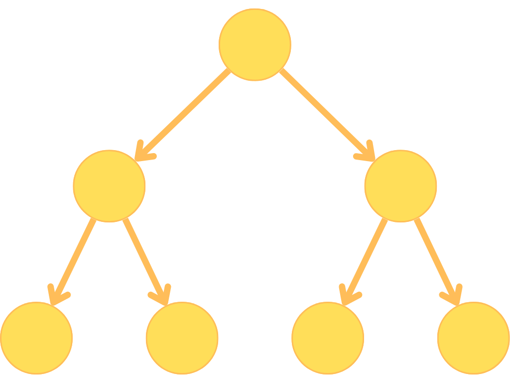
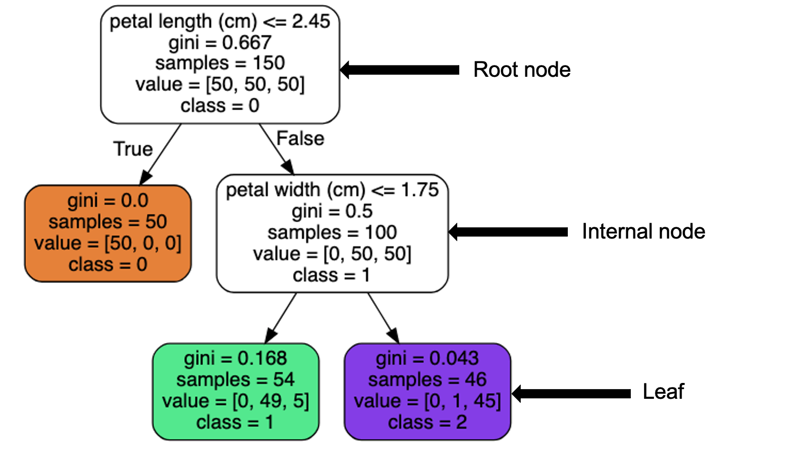
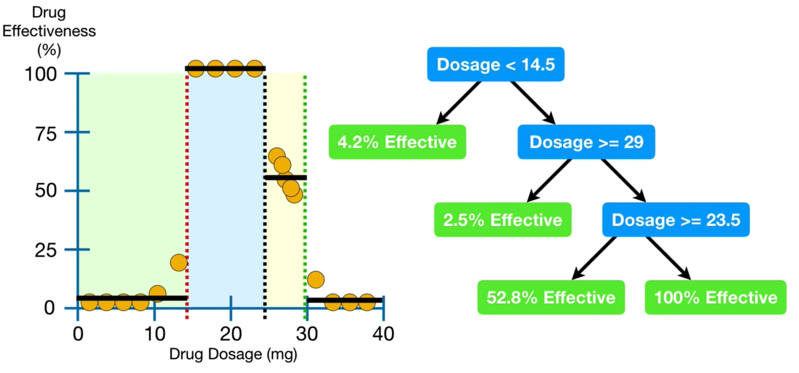
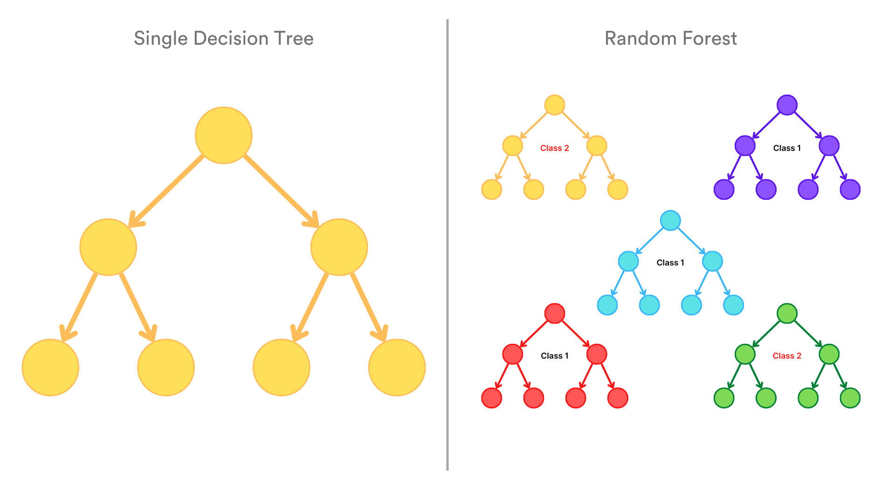
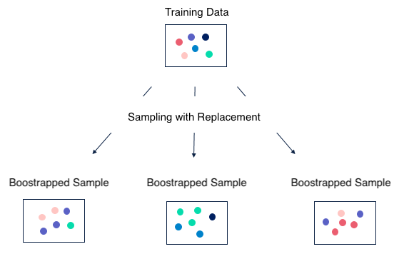
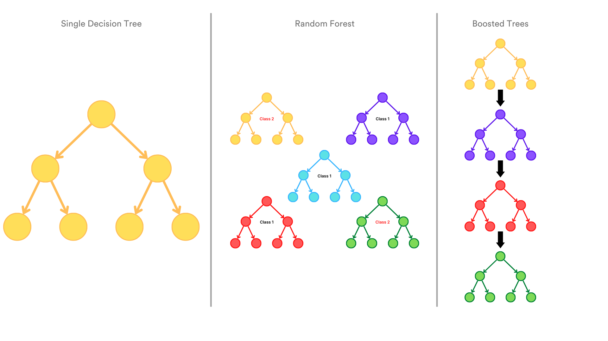
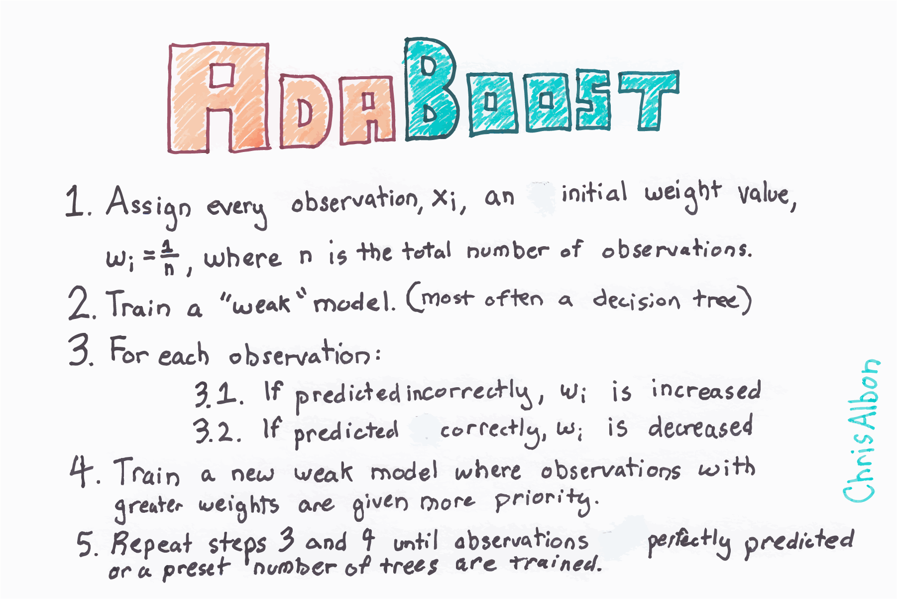
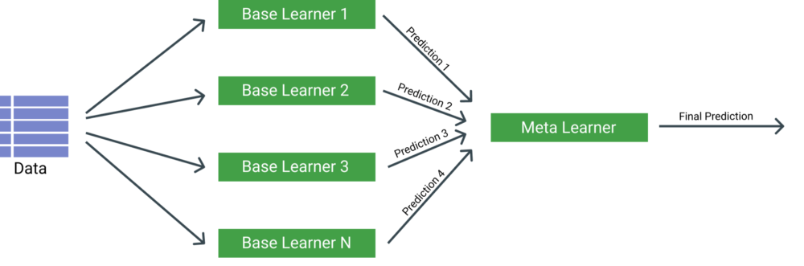

Ensemble Methods
Comprendre et maîtriser les méthodes d'ensemble —
Comprendre et maîtriser les méthodes d'ensemble —
Decision Trees, Bagging (Random Forest), Boosting (AdaBoost, GradientBoosting, XGBoost) et Stacking
- pour réduire la variance et le biais des modèles ML.
📋 Cheatsheet — Ensemble Methods
Decision Tree
from sklearn.tree import DecisionTreeClassifier, DecisionTreeRegressor
## Classification
tree_clf = DecisionTreeClassifier(
max_depth=2, # profondeur max (contrôle l'overfitting)
min_samples_split=7, # nb min d'échantillons pour splitter un nœud
min_samples_leaf=3, # nb min d'échantillons dans une feuille
random_state=2
)
tree_clf.fit(X_train, y_train)
tree_clf.predict([[4, 1]]) # → [1.] classe prédite
tree_clf.predict_proba([[4, 1]]) # → [[0., 0.907, 0.093]] ratio de classes dans la feuille
## Régression
tree_reg = DecisionTreeRegressor(max_depth=3)
tree_reg.fit(X_train, y_train)
## Importance des features (basée sur le Gini)
tree_clf.feature_importances_ # array([0.43, 0.57]) — proportion de réduction d'impuretéVisualisation de l'arbre
import graphviz
from sklearn.tree import export_graphviz
export_graphviz(
tree_clf,
out_file="tree.dot",
feature_names=X.columns,
class_names=['0','1','2'],
rounded=True, filled=True # couleurs et coins arrondis
)
with open("tree.dot") as f:
display(graphviz.Source(f.read())) # affiche l'arbre graphiquementBagging — Random Forest
from sklearn.ensemble import RandomForestRegressor, RandomForestClassifier
## Régression : moyenne des prédictions de n_estimators arbres
forest_reg = RandomForestRegressor(
n_estimators=100, # nombre d'arbres (plus = meilleur, mais plus lent)
max_depth=5, # profondeur max de chaque arbre
n_jobs=-1 # parallélise sur tous les cœurs
)
forest_reg.fit(X_train, y_train)
forest_reg.feature_importances_ # importance de chaque feature (somme = 1)
## Classification : vote majoritaire entre les n_estimators arbres
forest_clf = RandomForestClassifier(n_estimators=100, n_jobs=-1)
forest_clf.fit(X_train, y_train)
## Score OOB (Out-of-Bag) — pseudo test score sans validation set séparé
forest_reg = RandomForestRegressor(n_estimators=100, oob_score=True)
forest_reg.fit(X, y)
forest_reg.oob_score_ # → ~0.85 (score sur les échantillons non tirés)Bagging générique (n'importe quel modèle)
from sklearn.ensemble import BaggingClassifier, BaggingRegressor
from sklearn.neighbors import KNeighborsClassifier
from sklearn.linear_model import LinearRegression
## Bagger n'importe quel estimateur sklearn
bagged_knn = BaggingClassifier(
KNeighborsClassifier(n_neighbors=3), # weak learner
n_estimators=40, # nombre de modèles
oob_score=True # active le score OOB
)
bagged_knn.fit(X_train, y_train)
bagged_knn.oob_score_ # score OOB
bagged_lr = BaggingRegressor(LinearRegression(), n_estimators=50, oob_score=True)
bagged_lr.fit(X, y).oob_score_ # → ~0.507Boosting — AdaBoost
from sklearn.ensemble import AdaBoostRegressor, AdaBoostClassifier
from sklearn.tree import DecisionTreeRegressor
## AdaBoost : chaque arbre apprend sur les résidus pondérés du précédent
adaboost = AdaBoostRegressor(
DecisionTreeRegressor(max_depth=3), # weak learner (shallow tree)
n_estimators=50, # nombre d'étapes séquentielles
learning_rate=1.0 # contribution de chaque étape
)
adaboost.fit(X_train, y_train)Boosting — GradientBoosting (sklearn)
from sklearn.ensemble import GradientBoostingRegressor, GradientBoostingClassifier
## GradientBoosting : chaque arbre prédit les RÉSIDUS du précédent
gbr = GradientBoostingRegressor(
n_estimators=100, # nombre d'arbres séquentiels
learning_rate=0.1, # shrinkage : contribution de chaque arbre (η)
max_depth=3 # profondeur de chaque arbre weak learner
)
gbr.fit(X_train, y_train)Boosting — XGBoost ⚡️
from xgboost import XGBRegressor
from sklearn.model_selection import train_test_split
X_train, X_test, y_train, y_test = train_test_split(X, y, test_size=0.3, random_state=42)
X_test, X_val, y_test, y_val = train_test_split(X_test, y_test, test_size=0.5, random_state=42)
xgb = XGBRegressor(
max_depth=10, # profondeur max de chaque arbre
n_estimators=100, # nb max d'itérations
learning_rate=0.1, # shrinkage (η)
early_stopping_rounds=5 # arrête si la loss de val augmente 5 fois de suite
)
xgb.fit(
X_train, y_train,
eval_set=[(X_train, y_train), (X_val, y_val)] # surveille train et val à chaque itération
)
xgb.predict(X_val) # prédictions
## XGBoost dans un Pipeline sklearn
from sklearn.pipeline import make_pipeline
from sklearn.model_selection import cross_validate
pipe_xgb = make_pipeline(xgb)
cross_validate(pipe_xgb, X, y, cv=10, scoring='r2')Stacking
from sklearn.ensemble import VotingClassifier, VotingRegressor
from sklearn.ensemble import StackingClassifier, StackingRegressor
from sklearn.linear_model import LogisticRegression
from sklearn.ensemble import RandomForestClassifier
## VotingClassifier : agrégation simple (vote ou moyenne des probas)
ensemble = VotingClassifier(
estimators=[("rf", RandomForestClassifier()), ("lr", LogisticRegression())],
voting='soft', # 'soft' = moyenne des predict_proba | 'hard' = vote majoritaire
weights=[1, 1] # poids égaux entre les deux modèles
)
ensemble.fit(X_train, y_train)
## StackingClassifier : un meta-modèle apprend à combiner les prédictions
stacking = StackingClassifier(
estimators=[("rf", RandomForestClassifier()), ("knn", KNeighborsClassifier(n_neighbors=10))],
final_estimator=LogisticRegression() # meta-modèle entraîné sur les prédictions des base models
)
stacking.fit(X_train, y_train)⚠️ Récapitulatif — Erreurs clés à éviter
Laisser un Decision Tree croître sans contrainte
❌ DecisionTreeRegressor() sans max_depth → l'arbre mémorise chaque point du train, R² train = 1.0 mais R² test ≈ 0
✅ Toujours fixer au moins max_depth ou min_samples_leaf ; tuner avec GridSearchCV
Confondre predict_proba d'un arbre avec de vraies probabilités
❌ Interpréter 0.907 comme une probabilité calibrée → c'est simplement le ratio de classe dans la feuille
✅ Les arbres sont des classifieurs non-calibrés ; utiliser CalibratedClassifierCV si des probabilités calibrées sont nécessaires
Bagger un Random Forest (BaggingRegressor(RandomForestRegressor()))
❌ BaggingRegressor(RandomForestClassifier(), n_estimators=100) → entraîne 100 × 100 = 10 000 arbres !
✅ RandomForestClassifier(n_estimators=100) est déjà un bagging d'arbres — inutile de le re-bagger
Utiliser un learning_rate trop élevé en Gradient Boosting
❌ learning_rate=1.0 avec beaucoup d'estimateurs → overfitting rapide, chaque arbre contribue trop
✅ Règle empirique : learning_rate petit (0.01–0.1) + n_estimators grand ; utiliser early_stopping_rounds avec XGBoost
Scaler les données avant un modèle basé sur des arbres
❌ Perdre du temps à scaler pour Random Forest ou XGBoost — les splits sont basés sur l'ordre, pas la magnitude
✅ Pas de scaling nécessaire pour les tree-based models ; l'ajouter uniquement si le Pipeline doit être générique ou si PCA est utilisée
1) Decision Trees
Les arbres de décision sont des algorithmes supervisés hiérarchiques qui résolvent des tâches de classification et régression via des décisions binaires successives.

1.1 Vocabulaire

- Nœud racine : contient tout le dataset
- Nœud interne : condition de split (feature, seuil)
- Feuille : nœud terminal → prédiction (classe majoritaire ou moyenne)
- Profondeur : longueur du chemin racine → feuille
1.2 Indice de Gini
L'indice de Gini mesure l'impureté d'un nœud — plus il est bas, plus le nœud est pur.
$\text{Gini}(\text{nœud}) = 1 - \sum p_i^2$
$p_i$ = ratio de la classe $i$ dans le nœud.
## Calcul du Gini du nœud racine (3 classes équilibrées)
1 - (50/150)**2 - (50/150)**2 - (50/150)**2 # → 0.667 (nœud très impur)
## Calcul du Gini d'une feuille (quasi-pure)
1 - 0**2 - (49/54)**2 - (5/54)**2 # → 0.168 (nœud assez pur)1.3 Comment l'arbre est-il construit ?
L'algorithme CART (Classification and Regression Trees) :
- Partir du nœud racine (dataset entier)
- Tester toutes les combinaisons (feature, seuil) possibles
- Pour chaque combinaison, calculer le Gini moyen pondéré des deux nœuds fils
- Choisir la combinaison qui minimise ce Gini moyen
- Splitter le dataset avec cette règle
- Répéter pour chaque sous-ensemble
- S'arrêter quand aucun split n'améliore l'impureté
1.4 Classification — DecisionTreeClassifier
from sklearn.tree import DecisionTreeClassifier
from sklearn.datasets import load_iris
iris = load_iris()
X = iris.data[:, 2:] # petal length et petal width seulement
y = iris.target
tree_clf = DecisionTreeClassifier(max_depth=2, random_state=2)
tree_clf.fit(X, y)
tree_clf.predict([[4, 1]]) # → [1.]
tree_clf.predict_proba([[4, 1]]) # → [[0., 0.907, 0.093]] ratio dans la feuillepredict_proba retourne le ratio de classes dans la feuille, pas une probabilité calibrée. Les arbres sont des classifieurs orthogonaux (frontières parallèles aux axes).
👉 sklearn.tree.DecisionTreeClassifier
1.5 Régression — DecisionTreeRegressor
Le Gradient Boosting prédit la valeur moyenne de chaque feuille. L'arbre est construit en minimisant la somme des résidus au carré (SSR) à chaque split.

👉 sklearn.tree.DecisionTreeRegressor
1.6 Contrôler l'overfitting
DecisionTreeRegressor(
max_depth=3, # profondeur max → principal levier anti-overfitting
min_samples_split=7, # nb min de samples pour splitter un nœud interne
min_samples_leaf=3 # nb min de samples dans une feuille
)| Hyperparamètre | Effet si augmenté | Risque si trop petit |
|---|---|---|
max_depth | ↓ variance, ↑ biais | Overfitting |
min_samples_split | ↓ variance | Overfitting |
min_samples_leaf | ↓ variance | Overfitting |
1.7 Avantages et inconvénients
| 👍 Avantages | 👎 Inconvénients |
|---|---|
| Pas de scaling nécessaire | Forte variance (petit changement → arbre très différent) |
| Résistant aux outliers | Long à entraîner si profondeur élevée — $O(N \cdot p \cdot d)$ |
| Interprétable, visualisable | Splits orthogonaux (parallèles aux axes features) |
feature_importances_ intégré | Nécessite du tuning pour ne pas overfitter |
| Non-linéaire | — |
2) Bagging — Bootstrap Aggregating
Le Bagging entraîne plusieurs versions du même modèle (weak learners) en parallèle sur des échantillons bootstrappés (tirés avec remplacement), puis agrège leurs prédictions.
Objectif : réduire la variance

2.1 Bootstrapping
Chaque weak learner est entraîné sur un échantillon différent tiré avec remplacement du dataset original. En moyenne, ~63% des données originales sont représentées dans chaque bootstrap.

2.2 Random Forest = Bagging d'arbres
Un Random Forest est un ensemble de Decision Trees entraînés sur des bootstraps distincts, avec un sous-ensemble aléatoire de features à chaque split.
- Régression : les prédictions sont moyennées
- Classification : vote majoritaire entre les arbres

from sklearn.ensemble import RandomForestRegressor, RandomForestClassifier
forest = RandomForestRegressor(n_estimators=100, n_jobs=-1)
forest.fit(X_train, y_train)
forest.feature_importances_ # importance de chaque feature (basée sur réduction Gini)
## Score OOB — utilise les ~37% d'échantillons non tirés comme pseudo-validation
forest_oob = RandomForestRegressor(n_estimators=100, oob_score=True)
forest_oob.fit(X, y).oob_score_ # → ~0.85👉 sklearn.ensemble.RandomForestRegressor
👉 sklearn.ensemble.RandomForestClassifier
2.3 Bagging générique
from sklearn.ensemble import BaggingClassifier, BaggingRegressor
## Bagger n'importe quel estimateur (pas seulement des arbres)
bagged_knn = BaggingClassifier(
KNeighborsClassifier(n_neighbors=3),
n_estimators=40,
oob_score=True
)RandomForestClassifier(n_estimators=100) ≈ BaggingClassifier(DecisionTreeClassifier(), n_estimators=100) — mais RandomForest est plus optimisé (tirage aléatoire des features à chaque split).
2.4 Avantages et inconvénients du Bagging
| 👍 Avantages | 👎 Inconvénients |
|---|---|
| Réduit fortement la variance | Structure complexe, moins interprétable |
| Applicable à n'importe quel modèle | Long à entraîner |
| OOB score = validation gratuite | Ne réduit pas le biais |
3) Boosting
Le Boosting entraîne les weak learners séquentiellement : chaque modèle apprend des erreurs du précédent.
Objectif : réduire le biais

3.1 AdaBoost (Adaptive Boosting)
À chaque itération, AdaBoost augmente le poids des observations mal classées, forçant le prochain modèle à se concentrer dessus.
from sklearn.ensemble import AdaBoostRegressor, AdaBoostClassifier
from sklearn.tree import DecisionTreeRegressor
adaboost = AdaBoostRegressor(
DecisionTreeRegressor(max_depth=3), # weak learner : arbre peu profond
n_estimators=50,
learning_rate=1.0 # contribution de chaque étape
)
adaboost.fit(X_train, y_train)
👉 sklearn.ensemble.AdaBoostRegressor
3.2 Gradient Boosting 🔥
Plutôt que de pondérer les observations, Gradient Boosting entraîne chaque arbre à prédire les résidus du modèle précédent.
$D(x) = \text{dtree}_1(x) + \text{dtree}_2(x) + \dots + \text{dtree}_n(x)$
from sklearn.ensemble import GradientBoostingRegressor
gbr = GradientBoostingRegressor(
n_estimators=100, # nombre d'arbres séquentiels
learning_rate=0.1, # η (shrinkage) : réduit la contribution de chaque arbre → régularisation
max_depth=3 # profondeur de chaque arbre (shallow trees recommandés)
)
gbr.fit(X_train, y_train)👉 sklearn.ensemble.GradientBoostingRegressor
👉 Brilliantly Wrong — blog visuel sur le Gradient Boosting
3.3 XGBoost — Extreme Gradient Boosting ⚡️
Librairie dédiée, optimisée avec des techniques inspirées du Deep Learning : régularisation L1/L2 intégrée, parallélisation, early stopping.
from xgboost import XGBRegressor
## Split en 3 sets : train / val (early stopping) / test (évaluation finale)
X_train, X_test, y_train, y_test = train_test_split(X, y, test_size=0.3, random_state=42)
X_test, X_val, y_test, y_val = train_test_split(X_test, y_test, test_size=0.5, random_state=42)
xgb = XGBRegressor(
max_depth=10,
n_estimators=100,
learning_rate=0.1,
early_stopping_rounds=5 # arrête si la loss val augmente 5 fois consécutives
)
xgb.fit(
X_train, y_train,
eval_set=[(X_train, y_train), (X_val, y_val)] # surveille les deux sets à chaque itération
)
xgb.predict(X_val) # prédictions sur le set de validation## Intégration dans un Pipeline sklearn
from sklearn.pipeline import make_pipeline
from sklearn.model_selection import cross_validate
pipe_xgb = make_pipeline(xgb)
cv_results = cross_validate(pipe_xgb, X, y, cv=10, scoring='r2')3.4 Avantages et inconvénients du Boosting
| 👍 Avantages | 👎 Inconvénients |
|---|---|
| Réduit le biais (modèle plus expressif) | Entraînement séquentiel = lent |
| Les bons weak learners ont plus de poids | Sujette à l'overfitting (tuning nécessaire) |
| XGBoost : early stopping, régularisation | Sensible aux outliers (trop de temps à les prédire) |
4) Comparaison Bagging vs Boosting
| Bagging | Boosting | |
|---|---|---|
| Ordre | Parallèle | Séquentiel |
| Objectif | Réduire la variance | Réduire le biais |
| Exemples | Random Forest, BaggingRegressor | AdaBoost, GradientBoosting, XGBoost |
| Robustesse aux outliers | Bonne | Faible |
| Risque principal | Lenteur (n arbres) | Overfitting |

5) Stacking
Le Stacking entraîne des estimateurs hétérogènes (modèles différents) et agrège leurs prédictions via un méta-modèle.
Différents modèles capturent différentes structures dans les données → leur combinaison peut améliorer les performances.
5.1 VotingClassifier / VotingRegressor — agrégation simple
from sklearn.ensemble import VotingClassifier
ensemble = VotingClassifier(
estimators=[("rf", RandomForestClassifier()), ("lr", LogisticRegression())],
voting='soft', # 'soft' = moyenne des predict_proba (recommandé si les modèles sont calibrés)
weights=[1, 1] # poids relatifs de chaque modèle dans le vote
)
ensemble.fit(X_train, y_train)👉 sklearn.ensemble.VotingClassifier
5.2 StackingClassifier / StackingRegressor — méta-modèle
Un méta-modèle (final estimator) est entraîné sur les prédictions des modèles de base.

from sklearn.ensemble import StackingClassifier
from sklearn.neighbors import KNeighborsClassifier
stacking = StackingClassifier(
estimators=[
("rf", RandomForestClassifier()), # base model 1
("knn", KNeighborsClassifier(n_neighbors=10)) # base model 2
],
final_estimator=LogisticRegression() # méta-modèle entraîné sur les prédictions des base models
)
stacking.fit(X_train, y_train)👉 sklearn.ensemble.StackingClassifier
6) Preprocessing et modèles à base d'arbres
Les modèles basés sur des arbres (Decision Tree, Random Forest, GradientBoosting, XGBoost) ne nécessitent pas de scaling. Les splits sont basés sur l'ordre des valeurs ($x_j < t$), pas leur magnitude.
Quand quand même scaler ?
- Si
PCAest utilisée en amont (elle requiert des features comparables) - Pour construire un Pipeline générique où l'on souhaite switcher facilement entre tree-based et distance-based models
## Pipeline générique (scaling inclus pour flexibilité)
from sklearn.pipeline import make_pipeline
from sklearn.preprocessing import StandardScaler
from sklearn.ensemble import RandomForestRegressor
## Le StandardScaler n'impacte pas Random Forest, mais permet de tester Ridge dans le même pipeline
pipe = make_pipeline(StandardScaler(), RandomForestRegressor(n_estimators=100))📚 Bibliographie
👉 Visual Introduction to Decision Trees — r2d3.us
👉 Brilliantly Wrong — Gradient Boosting visuel
👉 Ensemble methods under the hood — Medium
👉 sklearn.tree.DecisionTreeClassifier
👉 sklearn.tree.DecisionTreeRegressor
👉 sklearn.ensemble.RandomForestRegressor
👉 sklearn.ensemble.GradientBoostingRegressor
- 🧭 Introduction
- 1 — Decision Tree : l'arbre de décision
- 2 — Bagging : la démocratie des modèles
- 3 — Boosting : la correction progressive
- 4 — Bagging vs Boosting : le récapitulatif
- 5 — Stacking : le jury d'experts hétérogènes
- 6 — Les arbres n'ont pas besoin d'être normalisés
- 7 — Erreurs classiques à éviter
- 🎯 Questions de vérification
- 📌 TL;DR
🧭 Introduction
En Machine Learning, un seul modèle fait souvent des erreurs. L'idée des méthodes d'ensemble est simple : plutôt que de faire confiance à un seul expert, on demande l'avis de plusieurs, puis on combine leurs réponses. Ce principe s'appelle la sagesse des foules.
Imagine un jury de 100 personnes qui votent pour décider si un accusé est coupable. Même si chaque juré se trompe parfois, le verdict collectif est souvent bien meilleur que celui d'un seul juge. C'est exactement ce que font les méthodes d'ensemble avec les modèles de Machine Learning.
Ce cours couvre quatre grandes idées :
- Decision Tree — l'élément de base, un arbre de décisions binaires
- Bagging (Random Forest) — entraîner plein d'arbres en parallèle, chacun sur un sous-ensemble de données
- Boosting (AdaBoost, GradientBoosting, XGBoost) — entraîner des arbres en séquence, chacun corrigeant les erreurs du précédent
- Stacking — combiner des modèles très différents via un "méta-modèle"
5 points à retenir avant de commencer
- Un seul Decision Tree est fragile : il overfit facilement (il mémorise les données au lieu d'apprendre).
- Le Bagging réduit la variance (instabilité du modèle) en moyennant plusieurs arbres.
- Le Boosting réduit le biais (erreur systématique) en corrigeant les erreurs successivement.
- Random Forest = Bagging appliqué à des arbres de décision, c'est l'un des modèles les plus fiables en pratique.
- XGBoost = version très optimisée du Gradient Boosting, souvent le grand gagnant des compétitions Kaggle.
1 — Decision Tree : l'arbre de décision
Qu'est-ce que c'est ?
Un arbre de décision, c'est une suite de questions binaires (oui/non) appliquées sur tes données pour arriver à une prédiction. Comme un jeu de "20 questions" : chaque question divise les données en deux groupes, jusqu'à obtenir des groupes assez purs.
Exemple concret : Tu veux prédire si un email est un spam ou non.
- Question 1 : Le mot "gratuit" est-il présent ? (oui/non)
- Question 2 : L'expéditeur est-il inconnu ? (oui/non)
- ...
- Feuille finale : "C'est un spam" ou "Ce n'est pas un spam"
Vocabulaire de l'arbre
| Terme | Définition simple |
|---|---|
| Nœud racine | Le point de départ : toutes les données |
| Nœud interne | Une question (feature + seuil) qui divise les données |
| Feuille | Le bout de l'arbre : la prédiction finale |
| Profondeur | Le nombre de questions sur le chemin du haut jusqu'en bas |
Comment l'arbre choisit ses questions ? L'indice de Gini
L'algorithme cherche la meilleure question à poser à chaque étape. Il utilise l'indice de Gini pour mesurer à quel point un groupe est "pur" (contient surtout une seule classe) ou "impur" (mélange de classes).
Où $p_i$ est la proportion de la classe $i$ dans ce nœud.
- Gini = 0 : le nœud est parfaitement pur (une seule classe, idéal)
- Gini = 0.5 : le nœud est totalement mélangé (deux classes à 50/50, le pire)
Exemple numérique :
Un nœud contient 3 classes parfaitement équilibrées (50 fleurs de chaque type, 150 au total) :
Un nœud presque pur (49 de classe A, 5 de classe B, 0 de classe C sur 54) :
# Vérification manuelle du Gini — nœud impur (3 classes équilibrées)
gini_racine = 1 - (50/150)**2 - (50/150)**2 - (50/150)**2
print(gini_racine) # → 0.667 (très impur)
# Nœud quasi-pur
gini_feuille = 1 - 0**2 - (49/54)**2 - (5/54)**2
print(gini_feuille) # → 0.168 (assez pur)Comment l'arbre est construit, étape par étape (algorithme CART)
- Partir du nœud racine (tout le dataset)
- Tester toutes les combinaisons possibles (feature, seuil)
- Pour chaque combinaison, calculer le Gini moyen pondéré des deux groupes créés
- Choisir la combinaison qui minimise ce Gini
- Couper le dataset selon cette règle
- Répéter pour chaque sous-groupe obtenu
- S'arrêter quand aucun split n'améliore la pureté (ou quand on atteint les limites fixées)
L'arbre apprend donc une suite de règles "if/else" automatiquement à partir des données, sans qu'on ait besoin de les définir manuellement.
Entraîner un Decision Tree en Python
On utilise le jeu de données Iris (3 espèces de fleurs, 4 mesures de pétales/sépales).
from sklearn.tree import DecisionTreeClassifier
from sklearn.datasets import load_iris
iris = load_iris()
X = iris.data[:, 2:] # on garde seulement la longueur et largeur des pétales
y = iris.target # la classe : 0, 1 ou 2
# Créer un arbre de profondeur maximale 2 (2 niveaux de questions)
tree_clf = DecisionTreeClassifier(max_depth=2, random_state=2)
tree_clf.fit(X, y) # entraînement
# Prédire la classe pour une nouvelle fleur (pétale long=4, large=1)
tree_clf.predict([[4, 1]]) # → [1] (classe 1 prédite)
# Prédire les "probabilités" (en réalité : ratio de classes dans la feuille)
tree_clf.predict_proba([[4, 1]]) # → [[0., 0.907, 0.093]]predict_proba ne retourne PAS de vraies probabilités. Il retourne simplement le ratio des classes présentes dans la feuille finale. Si 49 fleurs sur 54 dans cette feuille sont de classe 1, alors "proba" = 49/54 ≈ 0.907. C'est une proportion, pas une probabilité calibrée.
Régression avec un arbre
Pour la régression, l'arbre prédit la valeur moyenne des exemples qui tombent dans chaque feuille. Au lieu de minimiser le Gini, il minimise la somme des erreurs au carré (SSR) à chaque split.
from sklearn.tree import DecisionTreeRegressor
# Arbre pour prédire un prix, une température, etc.
tree_reg = DecisionTreeRegressor(max_depth=3)
tree_reg.fit(X_train, y_train) # y_train est une valeur numérique continueL'ennemi n°1 : l'overfitting
Un arbre sans contrainte va créer une feuille pour chaque point de données — il mémorise tout mais ne généralise pas du tout (R² train = 1.0 mais R² test ≈ 0).
# Les trois principaux leviers pour contrôler l'overfitting
DecisionTreeClassifier(
max_depth=3, # profondeur max : levier le plus important
min_samples_split=7, # un nœud doit avoir au moins 7 exemples pour être découpé
min_samples_leaf=3 # chaque feuille doit contenir au moins 3 exemples
)| Hyperparamètre | Ce qu'il fait si on l'augmente |
|---|---|
max_depth | Arbre moins profond → moins d'overfitting, mais plus de biais |
min_samples_split | Moins de découpes → arbre plus simple |
min_samples_leaf | Feuilles plus denses → moins de mémorisation du bruit |
Avantages et limites d'un seul arbre
| Avantages | Limites |
|---|---|
| Pas besoin de normaliser les données | Forte variance : un petit changement dans les données donne un arbre très différent |
| Résultat facile à expliquer | Overfit facilement sans tuning |
| Gère les relations non-linéaires | Frontières de décision toujours parallèles aux axes des features |
| Donne une importance des features | Moins performant que les méthodes d'ensemble |
La variance élevée d'un seul arbre est exactement le problème que le Bagging va résoudre dans la section suivante.
2 — Bagging : la démocratie des modèles
Le principe
Bagging = Bootstrap AGGregating. On crée plusieurs versions du même modèle, chacune entraînée sur un sous-ensemble légèrement différent des données, puis on agrège leurs prédictions.
Analogie : Imagine 100 groupes de jurés différents, chacun ayant vu une légère variation de l'affaire. Certains jurés peuvent se tromper, mais en vote majoritaire, les erreurs individuelles se compensent.
Objectif : réduire la variance (rendre le modèle plus stable).
Le bootstrap : tirer avec remplacement
Pour créer chaque sous-ensemble de données, on tire avec remplacement dans le dataset original. Si on a 1000 exemples :
- On tire 1000 fois au hasard en remettant chaque exemple après chaque tirage
- Certains exemples apparaîtront plusieurs fois, d'autres pas du tout
- En moyenne, environ 63% des données originales sont représentées dans chaque bootstrap
- Les ~37% restants s'appellent les données Out-of-Bag (OOB)
Les données OOB sont précieuses : elles permettent d'évaluer le modèle sans avoir besoin d'un set de validation séparé — on obtient un score de validation "gratuit".
Random Forest = Bagging d'arbres de décision
Un Random Forest c'est exactement ça : on entraîne 100 (ou plus) arbres de décision, chacun sur un bootstrap différent. En plus, à chaque split, on ne considère qu'un sous-ensemble aléatoire des features — ce qui rend les arbres encore plus différents entre eux (moins corrélés), ce qui améliore l'agrégation.
- Pour la régression : la prédiction finale = moyenne des prédictions de tous les arbres
- Pour la classification : la prédiction finale = vote majoritaire entre tous les arbres
from sklearn.ensemble import RandomForestRegressor, RandomForestClassifier
# --- Régression ---
# On crée une "forêt" de 100 arbres entraînés sur des bootstraps différents
forest_reg = RandomForestRegressor(
n_estimators=100, # nombre d'arbres dans la forêt
max_depth=5, # profondeur max de chaque arbre
n_jobs=-1 # utilise tous les cœurs du CPU pour paralléliser
)
forest_reg.fit(X_train, y_train)
# Importance des features : quelle feature contribue le plus aux splits ?
# (basée sur la réduction d'impureté de Gini, somme = 1.0)
print(forest_reg.feature_importances_)
# --- Score OOB : évaluation sur les données non tirées ---
# On active oob_score=True pour obtenir une évaluation "gratuite"
forest_oob = RandomForestRegressor(n_estimators=100, oob_score=True)
forest_oob.fit(X, y) # on entraîne sur tout X (pas de train/test split)
print(forest_oob.oob_score_) # → ~0.85 (score R² sur les données OOB)
# --- Classification ---
forest_clf = RandomForestClassifier(n_estimators=100, n_jobs=-1)
forest_clf.fit(X_train, y_train) # vote majoritaire entre les 100 arbresLe oob_score_ donne une estimation du score de généralisation sans avoir à créer un set de validation séparé. C'est particulièrement utile quand on a peu de données.
Bagger n'importe quel modèle
BaggingClassifier et BaggingRegressor permettent d'appliquer le principe du bagging à n'importe quel modèle sklearn, pas seulement aux arbres.
from sklearn.ensemble import BaggingClassifier, BaggingRegressor
from sklearn.neighbors import KNeighborsClassifier
from sklearn.linear_model import LinearRegression
# Bagger un KNN : 40 KNN entraînés sur 40 bootstraps différents
bagged_knn = BaggingClassifier(
KNeighborsClassifier(n_neighbors=3), # le modèle de base ("weak learner")
n_estimators=40, # nombre de copies entraînées
oob_score=True # active le score OOB
)
bagged_knn.fit(X_train, y_train)
print(bagged_knn.oob_score_) # score de validation automatique
# Bagger une régression linéaire
bagged_lr = BaggingRegressor(
LinearRegression(),
n_estimators=50,
oob_score=True
)
bagged_lr.fit(X, y)
print(bagged_lr.oob_score_) # → ~0.507Ne jamais bagger un Random Forest ! BaggingRegressor(RandomForestRegressor(), n_estimators=100) entraînerait 100 × 100 = 10 000 arbres. Random Forest est DÉJÀ un bagging d'arbres. Bagger un Random Forest, c'est doubler inutilement le travail.
Points clés du Bagging
| Avantages | Limites |
|---|---|
| Réduit fortement la variance | Ne réduit pas le biais (un mauvais modèle restera mauvais) |
| Applicable à n'importe quel modèle | Résultat moins interprétable qu'un seul arbre |
| Score OOB = validation gratuite | Plus long à entraîner (plusieurs modèles) |
3 — Boosting : la correction progressive
Le principe du Boosting
Là où le Bagging entraîne ses modèles en parallèle (indépendamment les uns des autres), le Boosting les entraîne en séquence : chaque modèle apprend à corriger les erreurs du modèle précédent.
Analogie : Imagine un étudiant qui révise son examen. Après chaque essai, il identifie les questions où il s'est trompé et consacre plus de temps à ces questions précises lors du prochain entraînement.
Objectif : réduire le biais (rendre le modèle plus expressif, capable de saisir des patterns complexes).
3.1 AdaBoost (Adaptive Boosting)
AdaBoost fonctionne en pondérant les exemples mal classés : après chaque modèle entraîné, les exemples sur lesquels il s'est trompé reçoivent un poids plus élevé. Le modèle suivant se concentrera davantage sur ces exemples difficiles.
from sklearn.ensemble import AdaBoostRegressor, AdaBoostClassifier
from sklearn.tree import DecisionTreeRegressor
# AdaBoost avec des arbres peu profonds comme "weak learners"
adaboost = AdaBoostRegressor(
DecisionTreeRegressor(max_depth=3), # arbre peu profond : intentionnellement faible
n_estimators=50, # nombre d'étapes séquentielles
learning_rate=1.0 # à quel point chaque étape contribue à la prédiction finale
)
adaboost.fit(X_train, y_train)On utilise intentionnellement des arbres peu profonds ("stumps" à max_depth=1 ou petits arbres). L'idée est que chaque modèle individuel soit faible mais que la combinaison soit forte.
3.2 Gradient Boosting
Gradient Boosting est une version plus générale et plus puissante du Boosting. Plutôt que de pondérer les exemples, il entraîne chaque arbre à prédire directement les résidus (les erreurs) du modèle précédent.
Comment ça marche, étape par étape :
- Le premier arbre fait une prédiction (souvent juste la moyenne de $y$)
- On calcule les résidus : $\text{résidu} = y_{\text{réel}} - y_{\text{prédit}}$
- Le deuxième arbre prédit ces résidus
- On additionne les prédictions : $D(x) = \text{arbre}_1(x) + \text{arbre}_2(x)$
- On recalcule les nouveaux résidus et on recommence
- On continue ainsi pour $n$ arbres
Exemple numérique simplifié :
- Valeur réelle : 150 (prix d'un appartement en k€)
- Arbre 1 prédit : 120 → résidu = 30
- Arbre 2 prédit le résidu 30, prédit : 25 → résidu restant = 5
- Arbre 3 prédit le résidu 5, prédit : 4 → résidu restant = 1
- Prédiction finale : 120 + 25 + 4 = 149
from sklearn.ensemble import GradientBoostingRegressor
# GradientBoosting : chaque arbre prédit les résidus du précédent
gbr = GradientBoostingRegressor(
n_estimators=100, # nombre d'arbres séquentiels (100 étapes de correction)
learning_rate=0.1, # η (shrinkage) : chaque arbre contribue seulement à 10%
# de sa prédiction — ralentit mais régularise
max_depth=3 # profondeur de chaque arbre (faible = recommandé)
)
gbr.fit(X_train, y_train)Le learning_rate (noté $\eta$) est un facteur d'amortissement. Au lieu d'ajouter 100% de la correction de chaque arbre, on n'en ajoute que learning_rate%. Ça ralentit l'apprentissage mais évite l'overfitting. Règle empirique : learning_rate petit (0.01–0.1) + beaucoup d'arbres.
3.3 XGBoost : le champion des compétitions
XGBoost (eXtreme Gradient Boosting) est une librairie dédiée qui optimise le Gradient Boosting avec plusieurs améliorations :
- Régularisation L1/L2 intégrée pour éviter l'overfitting
- Parallélisation malgré la nature séquentielle
- Early stopping : arrêt automatique si le modèle ne s'améliore plus sur un set de validation
from xgboost import XGBRegressor
from sklearn.model_selection import train_test_split
# On crée 3 ensembles : train / validation (pour early stopping) / test (évaluation finale)
X_train, X_test, y_train, y_test = train_test_split(X, y, test_size=0.3, random_state=42)
X_test, X_val, y_test, y_val = train_test_split(X_test, y_test, test_size=0.5, random_state=42)
xgb = XGBRegressor(
max_depth=10, # profondeur max de chaque arbre
n_estimators=100, # nombre maximum d'arbres (peut s'arrêter avant si early stopping)
learning_rate=0.1, # shrinkage : contribution de chaque arbre
early_stopping_rounds=5 # si la loss sur le set de validation n'améliore pas 5 fois de suite → arrêt
)
xgb.fit(
X_train, y_train,
eval_set=[(X_train, y_train), (X_val, y_val)] # surveille train ET val à chaque itération
)
predictions = xgb.predict(X_val) # prédictions sur le set de validationL'early stopping est une technique très pratique : au lieu de deviner combien d'arbres utiliser, XGBoost s'arrête tout seul quand il détecte que le modèle commence à overfitter (la performance sur le set de validation se dégrade).
# XGBoost dans un Pipeline sklearn — fonctionne comme n'importe quel estimateur
from sklearn.pipeline import make_pipeline
from sklearn.model_selection import cross_validate
pipe_xgb = make_pipeline(xgb)
cv_results = cross_validate(pipe_xgb, X, y, cv=10, scoring='r2') # validation croisée en 10 plisPoints clés du Boosting
| Avantages | Limites |
|---|---|
| Réduit le biais (capture des patterns complexes) | Entraînement séquentiel = plus lent que le Bagging |
| XGBoost : early stopping évite l'overfitting | Sensible aux outliers (les erreurs élevées attirent trop d'attention) |
| Souvent les meilleures performances en pratique | Nécessite du tuning (learning_rate, max_depth, n_estimators) |
4 — Bagging vs Boosting : le récapitulatif
| Bagging | Boosting | |
|---|---|---|
| Ordre d'entraînement | Parallèle (indépendant) | Séquentiel (chacun dépend du précédent) |
| Objectif | Réduire la variance | Réduire le biais |
| Exemple le plus connu | Random Forest | XGBoost |
| Robustesse aux outliers | Bonne | Faible (les outliers reçoivent trop de poids) |
| Risque principal | Lenteur si trop d'arbres | Overfitting si learning_rate trop grand |
En pratique : commence par Random Forest (robuste, peu de tuning). Si tu veux aller plus loin en performance, essaie XGBoost avec de l'early stopping.
5 — Stacking : le jury d'experts hétérogènes
Le principe du Stacking
Jusqu'ici, le Bagging et le Boosting utilisaient des copies du même type de modèle (des arbres). Le Stacking combine des modèles de types différents (un Random Forest, un KNN, une régression logistique...).
Chaque modèle a ses forces et ses faiblesses. Un méta-modèle apprend à exploiter les prédictions de chacun pour construire une prédiction finale plus forte.
Analogie : Tu demandes l'avis à un médecin, un cardiologue et un radiologue. Chacun donne son diagnostic. Ensuite, un médecin généraliste lit tous les diagnostics et donne le verdict final.
VotingClassifier : le vote simple
La version la plus simple du stacking : on agrège les prédictions par un simple vote.
from sklearn.ensemble import VotingClassifier
from sklearn.ensemble import RandomForestClassifier
from sklearn.linear_model import LogisticRegression
# Deux modèles très différents qui votent ensemble
ensemble = VotingClassifier(
estimators=[
("rf", RandomForestClassifier()), # modèle 1 : Random Forest
("lr", LogisticRegression()) # modèle 2 : Régression Logistique
],
voting='soft', # 'soft' : moyenne des probas (plus précis si modèles calibrés)
# 'hard' : vote majoritaire à la classe
weights=[1, 1] # poids égaux pour les deux modèles
)
ensemble.fit(X_train, y_train)voting='soft' est généralement meilleur que 'hard' car il utilise plus d'information (les probabilités entières, pas juste la classe gagnante).
StackingClassifier : le méta-modèle
Le vrai stacking : les prédictions des modèles de base deviennent les features d'entrée d'un méta-modèle.
from sklearn.ensemble import StackingClassifier
from sklearn.neighbors import KNeighborsClassifier
from sklearn.linear_model import LogisticRegression
from sklearn.ensemble import RandomForestClassifier
# Les "base models" font leurs prédictions
# Le "final_estimator" apprend à combiner ces prédictions
stacking = StackingClassifier(
estimators=[
("rf", RandomForestClassifier()), # base model 1
("knn", KNeighborsClassifier(n_neighbors=10)) # base model 2
],
final_estimator=LogisticRegression() # méta-modèle : apprend à pondérer les prédictions
)
stacking.fit(X_train, y_train)Comment ça fonctionne en interne :
- Les "base models" (Random Forest + KNN) sont entraînés sur les données d'entraînement
- Chaque base model génère des prédictions
- Ces prédictions deviennent les features d'un nouveau dataset
- Le
final_estimator(LogisticRegression ici) est entraîné sur ce nouveau dataset
6 — Les arbres n'ont pas besoin d'être normalisés
Un point important qui distingue les modèles à base d'arbres des autres :
Les arbres découpent les données selon des seuils du type "feature_j < 3.5". Ce qui compte, c'est l'ordre des valeurs, pas leur magnitude absolue. Qu'une feature aille de 0 à 1 ou de 0 à 10 000, l'arbre trouvera le même seuil optimal.
Donc : pas besoin de StandardScaler ou de MinMaxScaler pour Decision Tree, Random Forest, GradientBoosting ou XGBoost.
# Ce pipeline est correct mais le StandardScaler est inutile pour le Random Forest
# On peut l'inclure pour avoir un pipeline générique facilement interchangeable
from sklearn.pipeline import make_pipeline
from sklearn.preprocessing import StandardScaler
from sklearn.ensemble import RandomForestRegressor
# Le StandardScaler n'impacte pas les performances de Random Forest
# mais permet de switcher facilement vers Ridge ou un autre modèle distance-based
pipe = make_pipeline(StandardScaler(), RandomForestRegressor(n_estimators=100))Exception : inclure un scaler dans le pipeline reste utile si tu veux pouvoir switcher facilement entre un Random Forest et un modèle basé sur les distances (KNN, SVM, Ridge...) sans réécrire le pipeline.
7 — Erreurs classiques à éviter
Laisser croître un arbre sans contrainte
Sans max_depth, l'arbre mémorise chaque point d'entraînement → R² train = 1.0, R² test ≈ 0. Toujours fixer max_depth ou min_samples_leaf.
Interpréter predict_proba comme une vraie probabilité
Ce que retourne predict_proba pour un arbre, c'est juste le ratio de classes dans la feuille finale. Ce n'est pas une probabilité calibrée. Utilise CalibratedClassifierCV si tu as besoin de vraies probabilités.
Bagger un Random Forest
BaggingRegressor(RandomForestRegressor(), n_estimators=100) = 100 × 100 = 10 000 arbres entraînés inutilement. Random Forest est déjà un bagging. Ne pas re-bagger.
learning_rate trop élevé en Boosting
learning_rate=1.0 avec beaucoup d'estimateurs → overfitting quasi-certain. Règle : learning_rate entre 0.01 et 0.1, compenser avec plus d'arbres, et utiliser l'early stopping de XGBoost.
🎯 Questions de vérification
1. Quelle est la différence fondamentale entre Bagging et Boosting ?
Le Bagging entraîne ses modèles en parallèle sur des sous-ensembles de données différents et les combine — il réduit la variance. Le Boosting entraîne ses modèles en séquence, chacun corrigeant les erreurs du précédent — il réduit le biais.
2. Pourquoi un Decision Tree sans contrainte overfit-il ?
Parce qu'il peut créer une feuille pour chaque point de données, mémorisant ainsi les données d'entraînement au lieu d'apprendre un pattern général. Les hyperparamètres max_depth, min_samples_split et min_samples_leaf servent à limiter cette croissance.
3. Qu'est-ce qu'un score OOB et pourquoi est-il utile ?
Le score Out-of-Bag est calculé sur les ~37% de données non tirées lors du bootstrap. Chaque exemple est évalué par les arbres qui ne l'ont pas utilisé pour s'entraîner. Cela fournit une estimation de la performance de généralisation sans avoir besoin de créer un set de validation séparé.
4. Pourquoi l'early stopping de XGBoost est-il une bonne pratique ?
Parce qu'il permet d'éviter l'overfitting automatiquement : XGBoost surveille la performance sur un set de validation à chaque itération et s'arrête dès que la performance se dégrade pendant early_stopping_rounds itérations consécutives. On n'a pas besoin de deviner le bon nombre d'arbres à l'avance.
📌 TL;DR
- Un Decision Tree pose des questions binaires sur les données et prédit en fonction des groupes obtenus — simple à comprendre mais overfit facilement sans contraintes de profondeur.
- L'indice de Gini mesure l'impureté d'un nœud : l'algorithme CART choisit à chaque étape la question qui minimise ce Gini.
- Le Bagging entraîne plusieurs modèles en parallèle sur des bootstraps différents et agrège leurs réponses — réduit la variance — Random Forest en est l'exemple le plus connu.
- Le Boosting entraîne des modèles en séquence, chacun corrigeant les erreurs du précédent — réduit le biais — XGBoost est la version la plus efficace.
- XGBoost ajoute régularisation L1/L2 et early stopping au Gradient Boosting — souvent le meilleur modèle tabulaire en pratique.
- Le Stacking combine des modèles hétérogènes via un méta-modèle qui apprend à pondérer leurs prédictions.
- Les modèles à base d'arbres n'ont pas besoin de normalisation : les splits sont basés sur l'ordre des valeurs, pas leur magnitude.
- Règle d'or XGBoost :
learning_ratepetit (0.01–0.1) + beaucoup d'arbres + early stopping.
A. Concepts du cours
Pourquoi les ensembles fonctionnent
L'idée fondamentale : plusieurs modèles imparfaits combinés peuvent battre un seul modèle parfait. C'est de la sagesse des foules, version statistique.
Théorème du jury de Condorcet (1785) : si vous avez $N$ classifieurs avec une accuracy individuelle $p > 0.5$ et que leurs erreurs sont indépendantes, alors la probabilité que le vote majoritaire se trompe est :
Lecture : on somme la probabilité qu'exactement $k$ votants (sur $N$) se trompent, pour tous les $k$ qui donneraient une majorité erronée. Quand $N \to \infty$ avec $p > 0.5$, cette probabilité tend vers zéro.
Exemple chiffré : avec $p = 0.7$ et $N = 1$, erreur = 30%. Avec $N = 11$ votants indépendants, l'erreur du vote majoritaire tombe à environ 7.8%. Avec $N = 101$, elle est proche de 0.003%.
Le vote majoritaire (ou moyenne en régression) s'écrit simplement :
En pratique, les erreurs ne sont jamais parfaitement indépendantes (les modèles voient les mêmes données), mais le principe reste : diversité + agrégation = robustesse.
Décomposition biais-variance pour un ensemble : si on moyenne $N$ modèles indépendants de variance $\sigma^2$, la variance de l'ensemble est $\sigma^2 / N$. Si les modèles sont corrélés avec coefficient $\rho$, elle devient :
Lecture : plus les modèles sont décorrélés ($\rho$ petit), plus ajouter des arbres réduit la variance. Si $\rho = 1$ (modèles identiques), aucun gain. C'est pourquoi Random Forest force la décorrélation avec des bootstrap samples et une sélection aléatoire de features.
Trois mécanismes pour créer de la diversité :
- Bagging : entraîner sur des sous-échantillons différents (Random Forest)
- Boosting : entraîner séquentiellement, chaque modèle corrige les erreurs du précédent (XGBoost)
- Stacking : entraîner différents types de modèles puis apprendre comment les combiner
Analogie : un médecin spécialiste peut se tromper. Mais si vous demandez à 100 médecins indépendants de diagnostiquer un cas et que 95 disent la même chose, le diagnostic est presque certain. C'est exactement le principe du vote majoritaire en bagging.
Decision Trees
L'arbre de décision est le composant de base de la plupart des ensembles. Il fonctionne par splits successifs sur les features.
[age > 35 ?]
/ \
oui non
/ \
[revenu > 50k ?] [a un emploi ?]
/ \ / \
oui non oui non
| | | |
accord refus accord refusL'algorithme cherche, à chaque nœud, le split qui minimise l'impureté des sous-groupes obtenus. Deux mesures d'impureté courantes :
Lecture : $p_k$ est la proportion de la classe $k$ dans le nœud. Gini est maximal (0.5 en binaire) quand les classes sont équilibrées (nœud "impur") et minimal (0) quand le nœud est pur. L'entropie a la même forme mais avec un logarithme ; les deux donnent des résultats très similaires en pratique.
Exemple chiffré : dans un nœud avec 70 positifs et 30 négatifs, $p_1 = 0.7$, $p_0 = 0.3$. Gini = $1 - (0.49 + 0.09) = 0.42$. Entropie = $-(0.7 \log_2 0.7 + 0.3 \log_2 0.3) = 0.881$.
from sklearn.tree import DecisionTreeClassifier, plot_tree
import matplotlib.pyplot as plt
tree = DecisionTreeClassifier(max_depth=4, min_samples_split=20)
tree.fit(X_train, y_train)
plt.figure(figsize=(20, 10))
plot_tree(tree, feature_names=X.columns, class_names=["No", "Yes"], filled=True)Avantages : interprétable, pas besoin de scaling, gère les variables catégorielles, capture les interactions non linéaires.
Inconvénients : overfitte facilement (un arbre profond mémorise le bruit), instable (petit changement dans les données → arbre complètement différent), frontières alignées sur les axes.
Anti-pattern : utiliser un seul DecisionTree non régularisé. Vous overfittez quasi systématiquement. Toujours soit limiter max_depth (3-10) et min_samples_leaf, soit utiliser un Random Forest qui résout ce problème par construction.
Bagging et Random Forest
Bagging (Bootstrap Aggregating) : entraîner $N$ modèles, chacun sur un échantillon bootstrap (tirage avec remise) du dataset, puis moyenner les prédictions.
Mathématiquement, chaque arbre voit environ 63% des observations uniques (le reste est dupliqué ou absent). C'est cette variété qui décorrèle les arbres.
Random Forest ajoute une deuxième astuce : à chaque split d'arbre, on ne considère qu'un sous-ensemble aléatoire de $m$ features (typiquement $m = \sqrt{p}$ en classification, $m = p/3$ en régression). Cela décorrèle encore plus les arbres.
from sklearn.ensemble import RandomForestClassifier
rf = RandomForestClassifier(
n_estimators=200, # nombre d'arbres
max_depth=None, # None = arbres complètement développés
min_samples_split=2, # min d'observations pour splitter
max_features="sqrt", # √p features considérées à chaque split
n_jobs=-1, # parallélisme sur tous les cores
random_state=42,
)
rf.fit(X_train, y_train)Exemple chiffré : sur un dataset avec $p = 100$ features, un single arbre profond peut donner train=0.99 / test=0.72. Un Random Forest avec 200 arbres ($m = \sqrt{100} = 10$) peut donner train=0.98 / test=0.86. La différence train-test se comprime grâce à la décorrélation.
Avantages : très robuste (résiste à l'overfit même sans tuning), pas besoin de scaling, donne une feature importance, parallélisable, bonne baseline tabulaire.
Inconvénients : plus lent que les modèles linéaires en inférence, modèle volumineux en mémoire, moins interprétable qu'un seul arbre.
Boosting
Boosting : entraîner les modèles séquentiellement, où chaque nouveau modèle se concentre sur les erreurs des précédents.
Algorithmes classiques :
- AdaBoost : pondère les exemples mal classés pour les prochains modèles
- Gradient Boosting : chaque modèle prédit le gradient de la loss par rapport aux prédictions cumulées
from sklearn.ensemble import GradientBoostingClassifier
gb = GradientBoostingClassifier(
n_estimators=200,
learning_rate=0.1, # pas d'apprentissage (petit = plus d'arbres nécessaires)
max_depth=3, # arbres volontairement peu profonds (weak learners)
subsample=0.8, # stochastic gradient boosting
random_state=42,
)
gb.fit(X_train, y_train)Différences clés avec le bagging :
| Aspect | Bagging (RF) | Boosting (GB, XGB) |
|---|---|---|
| Mode d'apprentissage | Parallèle | Séquentiel |
| Type de base learners | Arbres profonds (low bias) | Arbres peu profonds (high bias) |
| Réduit | Variance | Biais |
| Sensibilité au bruit | Robuste | Plus sensible (overfit possible) |
| Vitesse d'entraînement | Rapide (parallèle) | Plus lente (séquentielle) |
| Performance typique | Très bonne | Souvent meilleure (avec tuning) |
Analogie : bagging, c'est demander à 100 médecins indépendants leur diagnostic et prendre la majorité — robuste mais limité par leur niveau moyen. Boosting, c'est entraîner un médecin junior, puis un nouveau qui se concentre sur les cas où le premier s'est trompé, puis un troisième qui aborde les erreurs des deux précédents — plus puissant mais peut sur-apprendre les "erreurs" qui sont en fait du bruit.
B. Compléments avancés
XGBoost, LightGBM, CatBoost
Trois implémentations modernes du gradient boosting qui dominent les compétitions ML tabulaires.
XGBoost (2014) : la première implémentation rapide. Régularisation explicite, support des valeurs manquantes, parallélisme.
from xgboost import XGBClassifier
xgb = XGBClassifier(
n_estimators=500,
learning_rate=0.05,
max_depth=6,
subsample=0.8,
colsample_bytree=0.8,
reg_alpha=0.1, # régularisation L1
reg_lambda=1.0, # régularisation L2
early_stopping_rounds=50,
eval_metric="auc",
)
xgb.fit(X_train, y_train, eval_set=[(X_val, y_val)])LightGBM (Microsoft, 2017) : 5-10× plus rapide qu'XGBoost grâce au "leaf-wise growth" (vs level-wise) et au "histogram-based binning". Standard de l'industrie en 2025.
from lightgbm import LGBMClassifier
lgb = LGBMClassifier(
n_estimators=500,
learning_rate=0.05,
num_leaves=31, # plus expressif que max_depth
min_child_samples=20,
reg_alpha=0.1,
)CatBoost (Yandex, 2017) : meilleur pour les variables catégorielles natives, sans besoin d'encoding manuel.
from catboost import CatBoostClassifier
cb = CatBoostClassifier(
iterations=500,
learning_rate=0.05,
depth=6,
cat_features=["city", "category"],
verbose=100,
)| Critère | XGBoost | LightGBM | CatBoost |
|---|---|---|---|
| Vitesse | Lent | Rapide | Moyen |
| Mémoire | Moyenne | Faible | Plus élevée |
| Catégorielles | Encoding manuel | Encoding manuel | Natif |
| Tuning | Plus de hyperparams | Plus de hyperparams | Bons défauts |
Recommandation 2025 : commencer par LightGBM pour le tabulaire. Plus rapide à itérer, performances équivalentes ou meilleures qu'XGBoost. Passer à CatBoost si vous avez beaucoup de variables catégorielles. XGBoost reste pertinent dans les écosystèmes établis.
Stacking
Le stacking entraîne un méta-modèle qui apprend à combiner les prédictions de plusieurs modèles de base.
from sklearn.ensemble import StackingClassifier
stacking = StackingClassifier(
estimators=[
("lr", LogisticRegression()),
("rf", RandomForestClassifier()),
("xgb", XGBClassifier()),
("svc", SVC(probability=True)),
],
final_estimator=LogisticRegression(), # méta-modèle simple
cv=5,
)
stacking.fit(X_train, y_train)Le méta-modèle (souvent une LogReg simple) reçoit en entrée les predict_proba des modèles de base et apprend leur pondération optimale. C'est l'arme secrète des compétitions Kaggle, mais c'est lourd en production : 4 modèles à entraîner, sauvegarder, et exécuter à chaque prédiction.
Feature importance
Les modèles ensemble donnent gratuitement une mesure de l'importance de chaque feature :
import matplotlib.pyplot as plt
import numpy as np
importances = rf.feature_importances_
feature_names = X.columns
indices = np.argsort(importances)[::-1]
plt.figure(figsize=(10, 6))
plt.bar(range(len(indices)), importances[indices])
plt.xticks(range(len(indices)), feature_names[indices], rotation=90)
plt.tight_layout()Trois types d'importance :
- Mean Decrease Impurity (MDI) : moyenne de la diminution d'impureté due à chaque feature sur tous les splits. Valeur par défaut de
feature_importances_. - Permutation importance : on permute aléatoirement une feature et on mesure la chute de performance. Plus robuste mais plus lente.
from sklearn.inspection import permutation_importance
perm = permutation_importance(rf, X_test, y_test, n_repeats=10, random_state=42)- SHAP values : décomposition équitable de chaque prédiction par feature. Standard moderne pour l'explicabilité.
import shap
explainer = shap.TreeExplainer(rf)
shap_values = explainer.shap_values(X_test)
shap.summary_plot(shap_values, X_test)Piège classique : la MDI est biaisée en faveur des features avec beaucoup de catégories ou de valeurs uniques. Une feature "ID utilisateur" sera artificiellement importante alors qu'elle ne contient aucune information utile pour la généralisation. Toujours vérifier avec permutation importance ou SHAP avant de tirer des conclusions.
C. Questions de compréhension
Q1 : Pourquoi un Random Forest avec 1000 arbres ne fait-il pas overfit, alors qu'un seul arbre de décision profond le fait ?
💡 Voir l'indice
Décorrélation et loi des grands nombres.
✅ Voir la réponse
Trois mécanismes :
- Bootstrap sampling : chaque arbre est entraîné sur ~63% des données originales (tirage avec remise). Les arbres ne voient pas exactement les mêmes exemples et apprennent donc des "bruits" différents qui s'annulent par moyenne.
- Random feature selection : à chaque split, on ne considère que $\sqrt{p}$ features aléatoires. Cela force les arbres à explorer différentes structures et les décorrèle drastiquement.
- Loi des grands nombres : moyenner $N$ estimateurs indépendants réduit la variance d'un facteur $1/N$. C'est mathématiquement garanti.
Conséquence : un Random Forest avec 1000 arbres a une variance ~30× plus faible qu'un seul arbre avec les mêmes hyperparamètres. C'est pourquoi vous pouvez laisser les arbres aller jusqu'à max_depth=None sans craindre l'overfit.
Q2 : Quelle est la différence philosophique entre bagging et boosting, et quand préférer l'un à l'autre ?
💡 Voir l'indice
Variance vs biais.
✅ Voir la réponse
Bagging réduit la variance : il prend des modèles à forte capacité (arbres profonds) qui overfittent individuellement, et les moyennise pour lisser le bruit.
Boosting réduit le biais : il prend des modèles faibles (arbres peu profonds) qui underfittent individuellement, et les empile séquentiellement pour capturer progressivement le signal.
Quand préférer :
- Bagging (Random Forest) : si vous voulez un modèle robuste sans tuning, qui marche out-of-the-box. Idéal pour des baselines rapides, datasets avec du bruit, modèles parallélisables.
- Boosting (XGBoost / LightGBM) : si vous voulez la meilleure performance possible et que vous êtes prêt à tuner. Presque toujours le gagnant des compétitions tabulaires.
- Hybride : Random Forest pour la baseline, LightGBM pour la version finale.
Q3 : Vous avez entraîné un XGBoost et la feature importance dit que "ID client" est la feature la plus importante. Que se passe-t-il ?
💡 Voir l'indice
Data leakage ou MDI bias.
✅ Voir la réponse
Deux causes possibles, à investiguer dans cet ordre.
Cause 1 — Data leakage : si "ID client" est ordonné chronologiquement et que vos labels dépendent du temps (par exemple, les premiers clients ont plus churné), l'ID encode involontairement le timing. C'est du leakage subtile.
Cause 2 — MDI bias : la mesure par défaut (Mean Decrease Impurity) favorise mécaniquement les features avec beaucoup de valeurs uniques, parce qu'elles offrent plus d'opportunités de splits. Une feature "ID" avec 100k valeurs uniques apparaît systématiquement importante même si elle n'apporte rien.
Diagnostic : recalculer l'importance avec permutation_importance ou SHAP. Si l'importance s'effondre, c'était du MDI bias. Si elle reste élevée, c'est du leakage et il faut enlever cette feature et investiguer pourquoi elle est si prédictive.
Règle d'or : ne jamais inclure des identifiants (ID, primary key, hash) comme features. Ce sont presque toujours des sources de leakage ou de pseudo-importance trompeuse.
Ressources additionnelles
- The Elements of Statistical Learning (Hastie et al.) — chapitres 9-10
- XGBoost documentation
- LightGBM documentation
- XGBoost: A Scalable Tree Boosting System (Chen & Guestrin, 2016) — papier fondateur
- LightGBM: A Highly Efficient Gradient Boosting Decision Tree (Ke et al., 2017)
- SHAP documentation
- Kaggle Learn — Intermediate ML